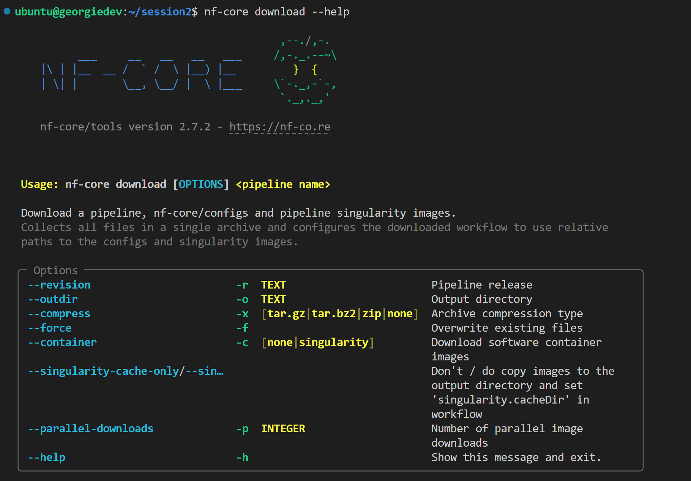
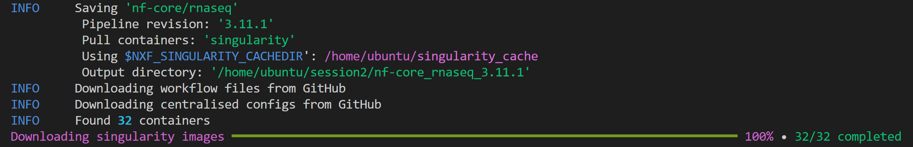
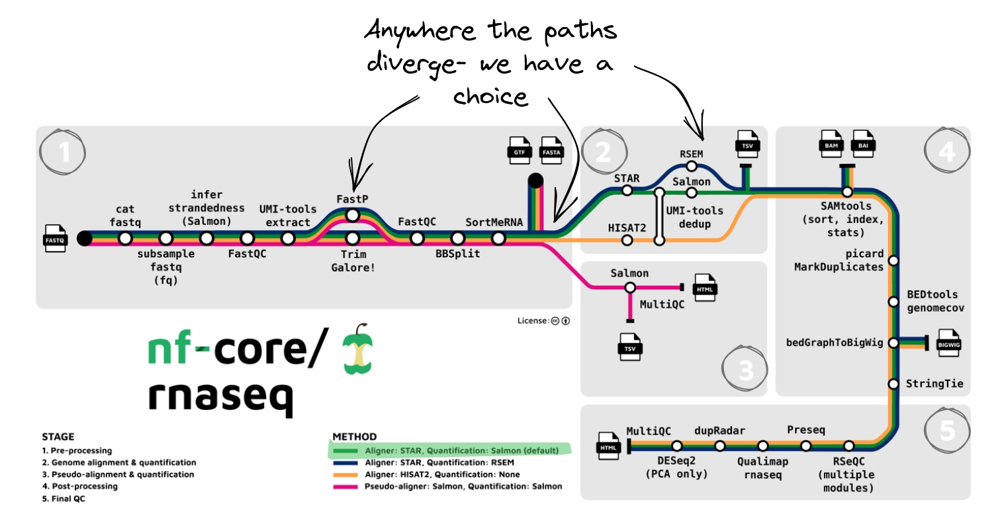
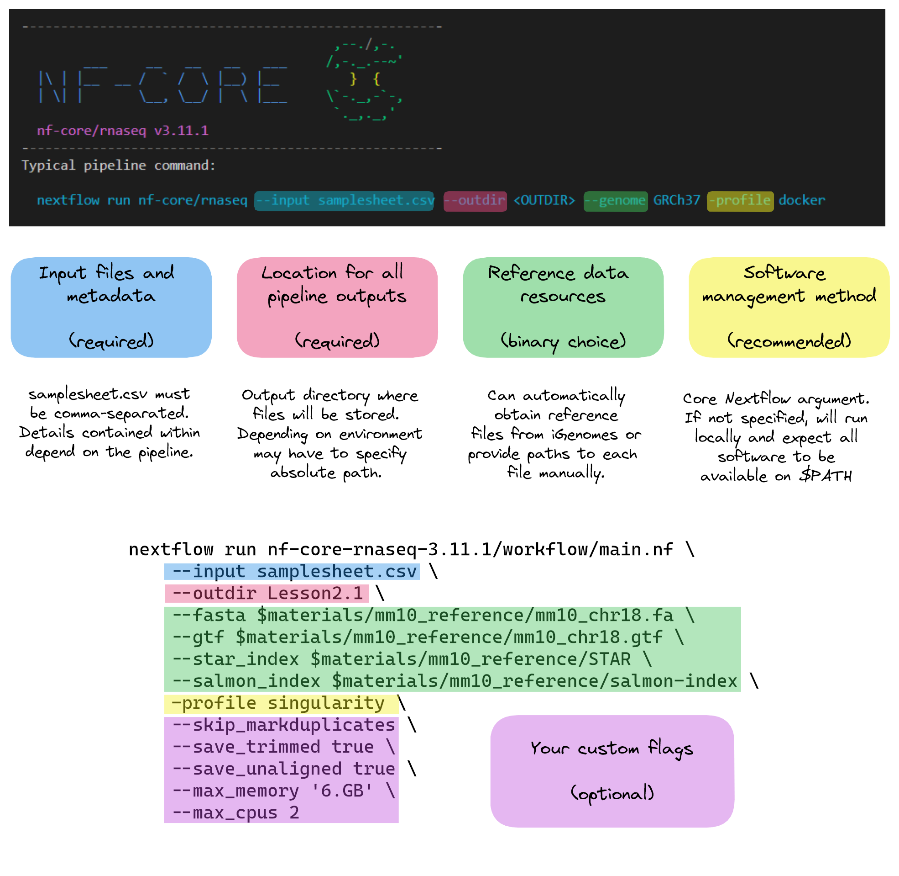
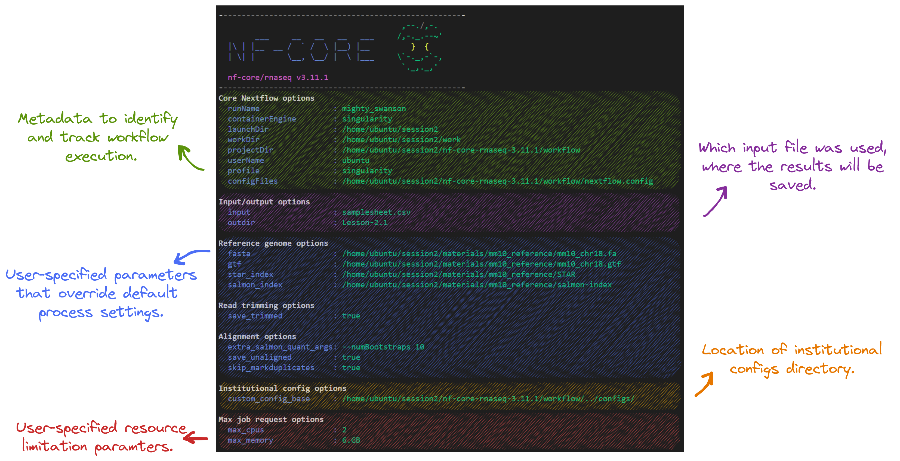

2.1. Design a run command
- Understand the levels of customisation available for nf-core pipelines
- Use the nf-core documentation to select appropriate parameters for a run command
- Write and run a nf-core rnaseq command on the command line
- Explore pipeline deployment and outputs
The nf-core community values flexibility and has built this into their pipelines by allowing users to customise various aspects of a workflow run using parameters. While nf-core pipelines are designed to run with ‘sensible’ default settings, these may not always suit the needs of your experiment of compute environment. In this lesson, we will design and execute a customised run command using different types of parameters.
2.1.1. Download the pipeline code
Create a new directory for all session 2 activities and move into it:
mkdir ~/session2 && cd $_We recommend that you keep a local copy of a pipeline’s code for the sake of reproducibility and good record keeping. There are a number of ways to download a nf-core pipeline. Using the nf-core tools download tool, take a look at the download options available to us:
nf-core download --help
Run the following command:
nf-core download rnaseq \
--revision 3.11.1 \
--outdir ~/session2/nf-core-rnaseq-3.11.1 \
--container singularity \
--compress none \
--singularity-cache-onlyNote that we’ve chosen to download a specific pipeline version by applying the --revision flag. If you would like to download the most recent version of an nf-core pipeline, you can exclude this flag.
We have also chosen to store all containers in a specified Singularity cache directory and not store an additional copy of these in the output directory. You will be prompted to define an existing directory as your Singularity cache. Specify:
NXF_SINGULARITY_CACHEDIR=/home/training/singularity_cacheYou will be prompted to define a Singularity cache directory to store container images ($NXF_SINGULARITY_CACHEDIR). Specify the path we used in Session 1:
export NXF_SINGULARITY_CACHEDIR=/home/training/singularity_cache$NXF_SINGULARITY_CACHEDIR is a Nextflow environmental variable that can be used to override default Nextflow and pipeline behaviours. You can set these environmental variables on the command line or by using env scopes when writing Nextflow.
The nf-core tools utility will download the pipeline files and institutional configuration files available at the nf-core/configs repository. Inside your nf-core-rnaseq-3.11.1 workflow directory, you should see 2 subdirectories:
ls -l nf-core-rnaseq-3.11.1total 8
drwxrwxr-x 7 ubuntu ubuntu 4096 Apr 21 02:08 configs
drwxrwxr-x 12 ubuntu ubuntu 4096 Apr 21 02:08 workflowThe public institutional configs were downloaded to the configs directory. The code base for our pipeline will be stored in the workflow directory:
ls -l nf-core-rnaseq-3.11.1/workflowThe files and directories we will be working with in this session are:
=======The nf-core tools utility will download the pipeline files and centralised configs but not the containers, given they already exist in our specified cache.
In situations where you might not wish to use the nf-core tools utility, download the nf-core/rnaseq source code from it’s GitHub repository with git.
Clone the nf-core/rnaseq repository:
git clone https://github.com/nf-core/rnaseq.git⛔ BEWARE ⛔ this method will download a copy of the pipeline with a different directory name and slightly different structure. If you choose to use this method, you will need to adjust some paths specified in the upcoming lessons accordingly.
Inside your nf-core-rnaseq-3.11.1 workflow directory, you should see 2 subdirectories:
ls -l nf-core-rnaseq-3.11.1total 8
drwxrwxr-x 7 ubuntu ubuntu 4096 Apr 21 02:08 configs
drwxrwxr-x 12 ubuntu ubuntu 4096 Apr 21 02:08 workflowRemember, as we ran the download command, a number of INFO logs were printed to the screen. The workflow files from GitHub were downloaded to the workflow directory and the centralised configs from GitHub were downloaded to the configs directory:

For this session we will be working with the workflow directory:
ls -l nf-core-rnaseq-3.11.1/workflowtotal 216
-rwxrwxr-x 1 ubuntu ubuntu 58889 Apr 21 02:08 CHANGELOG.md
-rwxrwxr-x 1 ubuntu ubuntu 9681 Apr 21 02:08 CITATIONS.md
-rwxrwxr-x 1 ubuntu ubuntu 9078 Apr 21 02:08 CODE_OF_CONDUCT.md
-rwxrwxr-x 1 ubuntu ubuntu 1096 Apr 21 02:08 LICENSE
-rwxrwxr-x 1 ubuntu ubuntu 10002 Apr 21 02:08 README.md
drwxrwxr-x 3 ubuntu ubuntu 4096 Apr 21 02:08 assets
drwxrwxr-x 2 ubuntu ubuntu 4096 Apr 21 02:08 bin
drwxrwxr-x 2 ubuntu ubuntu 4096 Apr 21 02:08 conf
drwxrwxr-x 3 ubuntu ubuntu 4096 Apr 21 02:08 docs
drwxrwxr-x 2 ubuntu ubuntu 4096 Apr 21 02:08 lib
-rwxrwxr-x 1 ubuntu ubuntu 2736 Apr 21 02:08 main.nf
drwxrwxr-x 4 ubuntu ubuntu 4096 Apr 21 02:08 modules
-rwxrwxr-x 1 ubuntu ubuntu 13970 Apr 21 02:08 modules.json
-rwxrwxr-x 1 ubuntu ubuntu 10847 Apr 21 02:08 nextflow.config
-rwxrwxr-x 1 ubuntu ubuntu 42576 Apr 21 02:08 nextflow_schema.json
-rwxrwxr-x 1 ubuntu ubuntu 359 Apr 21 02:08 pyproject.toml
drwxrwxr-x 4 ubuntu ubuntu 4096 Apr 21 02:08 subworkflows
-rwxrwxr-x 1 ubuntu ubuntu 1684 Apr 21 02:08 tower.yml
drwxrwxr-x 2 ubuntu ubuntu 4096 Apr 21 02:08 workflowsWe explored the standard nf-core workflow directory structure in Session 1. The most important files and directories for this session are:
>>>>>>> 1ae1edc83e39752e438c379a3d8d853f0acda3e1| Feature | Importance |
|---|---|
conf/ |
Contains standard configuration files for various profiles that build on global settings set by nextflow.config |
main.nf |
The executable Nextflow script that defines the structure and flow of the workflow. It calls workflows/rnaseq.nf |
modules/ |
Contains Nextflow processes used by the workflow. They are called by the main.nf file |
workflows/rnaseq.nf |
All the modules, subworkflows, channels, workflow structure for running the rnaseq pipeline |
2.1.2. Build your run command
All nf-core pipelines are provided with sensible default settings that have broad applicability and comprehensive documentation that explains pipeline usage and available parameters. Before we can decide which parameters to apply, we need to identify the default settings of the pipeline and where we can customise for our own needs, if desired.
Pipeline structure and possible customisation options will vary between nf-core pipelines. Generally, pipelines can be customised at a few different levels:
- The workflow structure: selecting which path to follow (i.e. the vaious method options below)
- The process: choosing one tool over another to perform a process (i.e. TrimGalore! vs FastP below)
- Tool settings: applying specific thresholds or optional flags for a tool
- Compute resources: specifying CPU and memory thresholds or execution and software methods based on the infrastructure you’re working on.

Looking at the nf-core/rnaseq pipeline structure above, we can see that the developers have organised the workflow into 5 stages and given users 1 location where we can make workflow-level customisations and 2 locations where we can make process-level customisations. The default nf-core/rnaseq method uses STAR to perform read alignment and Salmon to perform quantification. To understand tool and resource customisations, we’ll need to take a look at the parameter documentation. We will explore these in depth in the following lessons.
For now, take a look at all the options available for the pipeline by running:
nextflow run nf-core-rnaseq-3.11.1/workflow/main.nf --help Notice the top of the print out, there is a ‘typical’ run command provided. In the diagram below, we can compare the typical run command with the run command we will be executing. Our command applies the default method of STAR and Salmons for alignment and quantification but we’ve also diverged from the typical command where we have:
- Provided our own reference files via file specific parameters instead of using the iGenomes repository
- Added some optional flags to customise some processes
- Added some optional resource specifications suitable for our environment.

Underneath the typical run command suggestion, there are lots parameters, grouped under headings.
In situations where you might not wish to use the nf-core tools utility, download the nf-core/rnaseq source code from it’s GitHub repository with git.
Clone the nf-core/rnaseq repository:
git clone https://github.com/nf-core/rnaseq.git⛔ BEWARE ⛔ this method will download a copy of the pipeline with a different directory name and slightly different structure. If you choose to use this method, you will need to adjust some paths specified in the upcoming lessons accordingly.
2.1.2. Design your run command
All nf-core pipelines are provided with comprehensive documentation that explains pipeline usage and available parameters. All nf-core pipelines can be run using a single command but the types and number of parameters will vary between pipelines. Generally, pipelines can be customised at a few different levels:
| Level of effect | Customisation feature |
|---|---|
| The workflow | Where diverging workflows are available for a pipeline, you may choose a path to follow |
| A process | Where more than one tool is available for a single process, you may choose which to use |
| A tool | Apply specific thresholds or optional flags for a tool on top of the default run command |
| Compute resources | Specify resource thresholds or software execution methods for the workflow or a process |
Looking at the nf-core/rnaseq pipeline structure below, we can see that the developers have:
- Organised the workflow into 5 stages based on the type of work that is being done
- Provided multiple workflow options and specified which is the default
- Provided multiple tool options for some processes
The number and type of default and optional parameters an nf-core pipeline accepts is at the discretion of it’s developers. However at a minimum, pipelines typically:
- Require users to specify a sample sheet (
--input) detailing sample data and relevant metadata - Autogenerate or acquire missing reference files from iGenomes (
--genome) if not provided by the user.
You can see the recommended (typical) run command and all the parameters available for the nf-core/rnaseq pipeline by running:
nextflow run nf-core-rnaseq-3.11.1/workflow/main.nf --help The typical or recommended run command for this pipeline is provided at the top of the screen.
nextflow run nf-core/rnaseq --input samplesheet.csv --outdir <OUTDIR> --genome GRCh37 -profile dockerIt outlines a requirement for a few basic things:
- An input file
- A location to store outputs
- Relevant reference data
- A software management method
Notice at the bottom of the print out, there is:
!! Hiding 24 params, use --show_hidden_params to show them !!Three additional parameter sections are hidden from view. This is because they are less commonly used. To view all the pipeline run options on the command line, run:
nextflow run nf-core-rnaseq-3.11.1/workflow/main.nf --help --show_hidden_paramsNextflow-specific parameters use one (-) hyphen, whereas pipeline-specific parameters use two (--). In the typical run command above -profile is a Nextflow parameter, while --input is an nf-core parameter.
Most of us will need to adjust the command a little more for our experiments though. Today we’ll be adjusting the typical nf-core/rnaseq run command by:
- Providing our own reference files
- Using the Singularity profile, instead of Docker
- Customising some processes
- Specifying the computing resource limitations of our instances
You can see how we’ve customised the typical run command in the diagram below:
2.1.3. Run the pipeline
<<<<<<< HEADOur input fastq files, reference data, and sample sheet are already available on an external file system called CernVM-FS that we can access from our Nimbus instances. Take a look at the files:
ls -l /cvmfs/data.biocommons.aarnet.edu.au/training_materials/SIH_training/UnlockNfcore_0523drwxrwxr-x 2 ubuntu ubuntu 4096 Feb 14 05:36 fastqs
drwxrwxr-x 3 ubuntu ubuntu 4096 Feb 14 05:46 mm10_reference
-rw-rw-r-- 1 ubuntu ubuntu 641 Feb 16 05:57 samplesheet.csvCopy the following into a file called samplesheet.csv:
sample,fastq_1,fastq_2,strandedness
SRR3473989,/cvmfs/data.biocommons.aarnet.edu.au/training_materials/SIH_training/UnlockNfcore_0523/fastqs/SRR3473989_selected.fastq.gz,,forward
SRR3473988,/cvmfs/data.biocommons.aarnet.edu.au/training_materials/SIH_training/UnlockNfcore_0523/fastqs/SRR3473988_selected.fastq.gz,,forward
SRR3473987,/cvmfs/data.biocommons.aarnet.edu.au/training_materials/SIH_training/UnlockNfcore_0523/fastqs/SRR3473987_selected.fastq.gz,,forward
SRR3473985,/cvmfs/data.biocommons.aarnet.edu.au/training_materials/SIH_training/UnlockNfcore_0523/fastqs/SRR3473985_selected.fastq.gz,,forward
SRR3473986,/cvmfs/data.biocommons.aarnet.edu.au/training_materials/SIH_training/UnlockNfcore_0523/fastqs/SRR3473986_selected.fastq.gz,,forward
SRR3473984,/cvmfs/data.biocommons.aarnet.edu.au/training_materials/SIH_training/UnlockNfcore_0523/fastqs/SRR3473984_selected.fastq.gz,,forwardStore the path to our prepared data to in a variable for our run command:
materials=/cvmfs/data.biocommons.aarnet.edu.au/training_materials/SIH_training/UnlockNfcore_0523Now run the pipeline:
nextflow run nf-core-rnaseq-3.11.1/workflow/main.nf \
--input samplesheet.csv \
--outdir Lesson-2.1 \
--fasta $materials/mm10_reference/mm10_chr18.fa \
--gtf $materials/mm10_reference/mm10_chr18.gtf \
--star_index $materials/mm10_reference/STAR \
--salmon_index $materials/mm10_reference/salmon-index \
-profile singularity \
--skip_markduplicates \
--save_trimmed true \
--save_unaligned true \
--max_memory '6.GB' \
--max_cpus 2We need to store the path to our input and reference data in a variable for our run command:
materials=/home/ubuntu/session2/materials #for cloudstor
materials=/cvmfs/data.biocommons.aarnet.edu.au/training_materials/SIH_training/UnlockNfcore_0523 #for cvmfsNow run the pipeline, with the necessary flags and the samplesheet.csv file you just created:
nextflow run nf-core-rnaseq-3.11.1/workflow/main.nf \
--input samplesheet.csv \
-profile singularity \
--skip_markduplicates \
--fasta $materials/mm10_reference/mm10_chr18.fa \
--gtf $materials/mm10_reference/mm10_chr18.gtf \
--star_index $materials/mm10_reference/STAR \
--salmon_index $materials/mm10_reference/salmon-index \
--save_trimmed true \
--save_unaligned true \
--extra_salmon_quant_args '--numBootstraps 10' \
--max_memory '6.GB' \
--max_cpus 2 \
--outdir Lesson-2.1Is everyone ok?
Yes, move on 👏 :clap:
No, help! 😢 :cry:
Take a look at the stdout printed to the screen. Your workflow configuration and parameter customisations are all documented here. You can use this to confirm if your parameters have been correctly passed to the run command:

As the workflow starts, you will also see a number of processes spawn out underneath this. Recall from session 1 that processes are executed independently and can run in parallel. Nextflow manages the data dependencies between processes, ensuring that each process is executed only when its input data is available and all of its dependencies have been satisfied. Take a look at the image below which explains a workflow’s process status output provided by Nextflow using the data dependencies for the STAR_ALIGN process as an example.

2.1.4. Examine the outputs
Once your pipeline has completed, you should see this message printed to your terminal:
-[nf-core/rnaseq] Pipeline completed successfully with skipped sampl(es)-
-[nf-core/rnaseq] Please check MultiQC report: 6/6 samples failed strandedness check.-
Completed at: 21-Apr-2023 03:58:56
Duration : 14m 18s
CPU hours : 0.4
Succeeded : 170The pipeline ran successfully, however note the warning about all samples having failed the strandedness check. We’ll explore that in the next lesson. In the meantime, list (ls -la) the contents of your directory, you’ll see a few new directories (and a hidden directory and log file) have been created:
total 416
drwxrwxr-x 7 ubuntu ubuntu 4.0K Apr 21 03:44 .
drwxr-x--- 15 ubuntu ubuntu 4.0K Apr 21 01:56 ..
drwxrwxr-x 4 ubuntu ubuntu 4.0K Apr 21 03:58 .nextflow
-rw-rw-r-- 1 ubuntu ubuntu 371K Apr 21 03:58 .nextflow.log
-rw-rw-r-- 1 ubuntu ubuntu 17K Apr 21 03:50 .nextflow.log.1
drwxrwxr-x 7 ubuntu ubuntu 4.0K Apr 21 03:58 Lesson-2.1
drwxrwxr-x 4 ubuntu ubuntu 4.0K Apr 21 02:08 nf-core-rnaseq-3.11.1
-rw-rw-r-- 1 ubuntu ubuntu 563 Apr 21 03:14 samplesheet.csv
drwxrwxr-x 143 ubuntu ubuntu 4.0K Apr 21 03:58 workNextflow has created 2 new output directories, work and Lesson-2.1 in the current directory.
The work directory
As each job is run, a unique sub-directory is created in the work directory. These directories house temporary files and various command logs created by a process. We can find all information regarding this process that we need to troubleshoot a failed process.
The Lesson-2.1 directory
All final outputs will be presented in a directory specified by the --outdir flag.
The .nextflow directory
This directory contains a cache subdirectory to store cached data such as downloaded files and can be used to speed up subsequent pipeline runs. It also contains a history file which contains a record of pipeline executions including run time, the unique run name, and command line arguments used.
The .nextflow.log file
This file is created by Nextflow during the execution of a pipeline and contains information about all processes and any warnings or errors that occurred during execution.
- nf-core pipelines are provided with sensible default settings and required inputs.
- Customising a pipeline’s run command can be achieved by applying parameters.
- Parameters can be used to customise the workflow, some processes, some tools, and compute resources.
- The number of hyphens indicate if a parameter flag is specific to Nextflow or the pipeline.
All materials copyright Sydney Informatics Hub, University of Sydney